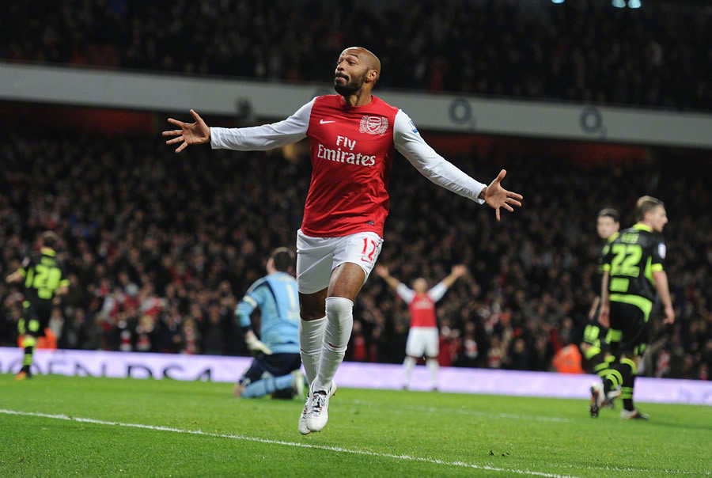
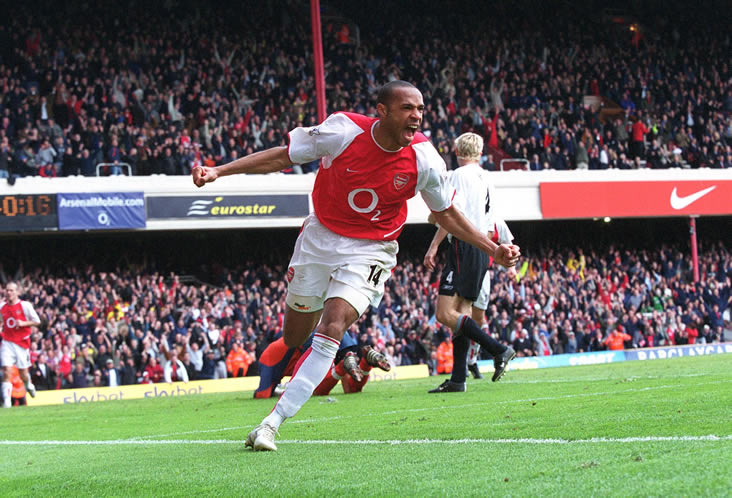

亨利：谁与争锋
展开/闭合
还是回到伦敦吧，通往海布里的快车一趟趟运行着，这里面总会送走过客迎来新生。06年5月7日，即将送走的过客正是93年的枪手圣殿海布里。 队长亨利上演帽子戏法为这座拥有无限辉煌的球场告别。

32岁的亨利就坐在那里，深情的目光望过去，都是自己22岁的影子。 380场比赛，226个进球，4座英超金靴，2座英超奖杯，49场不败，历史最佳射手，海布里的最后一战，海布里的最后一吻。 当烟花升起的时候，那个曾属于亨利的海布里国王时代不会随年华逝去，而只会在年华的飘零中常常记起。
